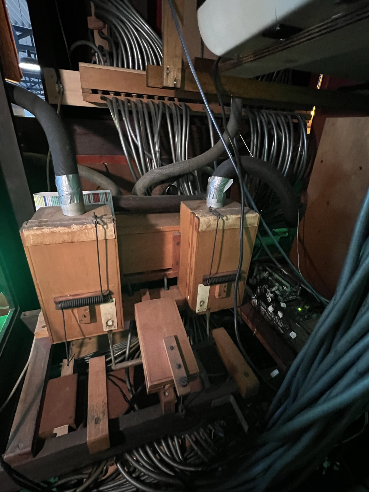
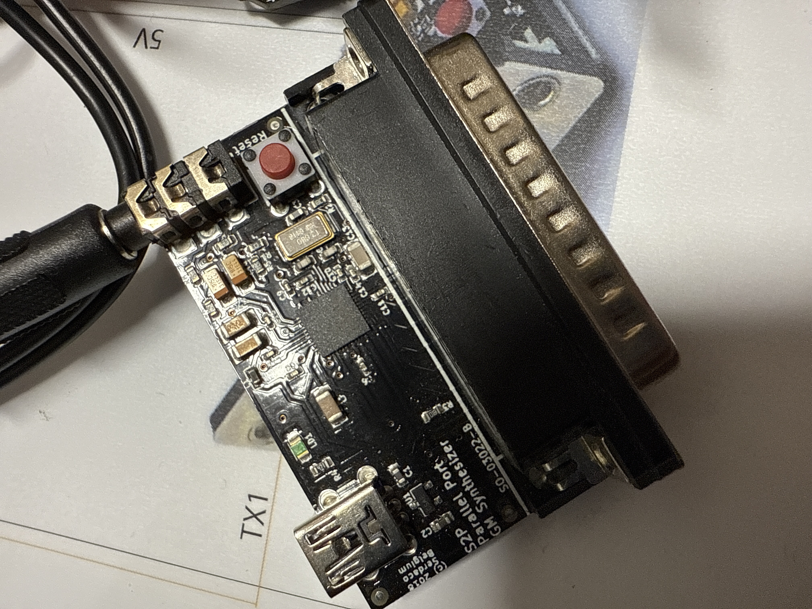

Overview
This project involved the restoration and technical reconstruction of a historic orchestrion dating from around 1900.
The original instrument is based on mechanical and pneumatic technology. Air pressure, pumps and a perforated-card system control the individual notes and instruments.
Over the course of its life, however, the orchestrion had already been modified. An electronic organ had previously been installed and adapted so that the individual electronic keys could still be triggered through the instrument's pneumatic mechanism.
Project details
The previously installed electronic organ had reached a point where it could no longer be repaired reliably. Because the mechanical and pneumatic parts of the orchestrion were still functional, the objective was not to replace the historic mechanism but to develop a completely new electronic system around it.
The new architecture combines a Raspberry Pi, an Arduino and dedicated MIDI electronics. Signals coming from the existing mechanical and pneumatic system are translated into modern electronic control commands.
The Arduino handles the interface between the many physical control lines and the new digital electronics, while the Raspberry Pi manages the higher-level playback and system logic. A MIDI module is used to generate and control the musical instrument sounds.
One of the main challenges was integrating the modern electronics into the existing historic mechanism without changing the way the orchestrion itself operates. A large number of individual cables and connections were required to interface the pneumatic actions with the electronic control system.
The completed system has since been operating reliably as part of the museum installation.
Pneumatic mechanism
The original system uses air pressure and mechanical valves to trigger individual notes and instrument functions.
Perforated-card control
The historic perforated-card mechanism remains part of the instrument and provides the basis for the musical sequence.
Arduino interface
An Arduino translates the many physical control signals from the historic mechanism into commands that can be processed by the modern electronics.
Raspberry Pi control
A Raspberry Pi coordinates the system and provides the higher-level control logic for the new electronic architecture.
MIDI sound generation
A dedicated MIDI system replaces the failed electronic organ and generates the musical sounds controlled by the original mechanism.
Multi-channel audio
A four-channel amplifier separates organ, bass and additional instruments so that the different musical sections can be controlled independently.
Status display
A small integrated display shows the instruments and notes currently being played by the system.
Historic integration
The new electronics were integrated into the existing mechanical structure rather than replacing the historic operating principle.
From air pressure to MIDI
One of the most interesting aspects of the project is the connection between technologies separated by more than a century.
At one end, the orchestrion still operates through pumps, air pressure, valves and mechanical movement. At the other end, modern electronics generate and amplify the musical sounds.
The new interface forms the bridge between both worlds. A pneumatic action can ultimately result in a digital MIDI command, which then produces the corresponding organ, bass or additional instrument sound.
This made it possible to preserve the characteristic mechanical operation of the instrument while replacing only the electronic section that could no longer be restored.
Technology
The reconstructed system combines embedded electronics, MIDI, audio amplification and the original pneumatic mechanism.
Arduino hardware is used for low-level interfacing with the numerous mechanical and pneumatic control signals. The Raspberry Pi provides the central system logic and coordinates communication with the MIDI hardware.
The MIDI module generates the different musical voices, while a four-channel amplifier provides separate audio paths for the organ, bass and additional instruments.
A small display provides real-time visual feedback by showing the currently active instruments and notes, making the otherwise invisible interaction between the historic mechanism and the modern electronics visible.
Media & demo
The images below can document the complete reconstruction: the historic orchestrion and pneumatic mechanism, the previous electronic installation, the new Arduino and Raspberry Pi electronics, MIDI hardware, amplifier system and the large amount of wiring required to integrate everything into the existing instrument.
Additional images can show the real-time display and the finished orchestrion operating again as part of the museum exhibition.






Orchestrion 1900 — restoration & electronic reconstruction